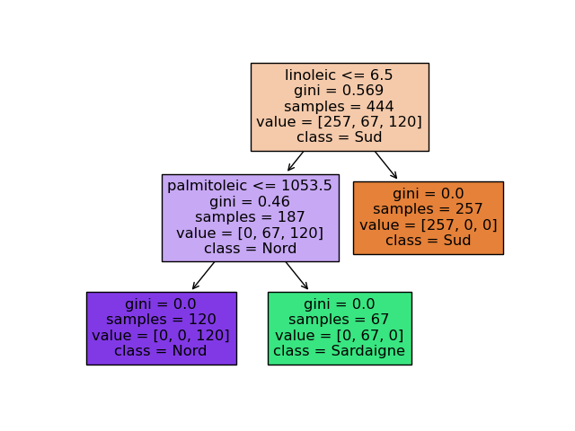

Classification supervisée
Dans ce TP, on va aborder la classification supervisée en la mettant en œuvre sur le jeu de données olives.
Les 2 TPs précédents (tableaux de données et graphiques) doivent avoir été faits.
Introduction
Les olives du jeu de données proviennent chacune d'une région particulière d'Italie : nord, sud, Sardaigne. Celles-ci sont numérotées et la valeur associée à chaque olive est dans l'attribut 1 dénommé region. Chaque région est découpée en sous-régions ; cette sous-région est dans les attributs 0 et 2 ; l'attribut 2 est juste le numéro de la sous-région dont le nom est donné par l'attribut 0. La carte ci-dessous indique ces régions et certaines sous-régions.
Chaque olive étant par ailleurs caractérisée par sa teneur en certains acides, la question que nous étudions dans ce TP est : à partir de cette composition chimique, peut-on déterminer la provenance de l'olive ?
Si on arrive à déterminer la provenance à partir de la composition chimique de l'olive, on peut garantir que la provenance indiquée est la bonne et pourquoi pas, détecter ainsi des tentatives de fraudes si ce n'est pas le cas.
Premiers pas : approche graphique (exploration visuelle des données)
Face à un jeu de données, la première chose à faire et de l'explorer visuellement. Dans le cas où on souhaite prédire la valeur d'un attribut, on se pose la question : la réponse à la question qui est posée saute-t-elle aux yeux ?
Donc, on commence par faire des graphiques très simples pour voir s'il est possible de prédire la région de provenance de l'olive.
On commence par la région car il y a 3 régions qui se découpent en 8 zones. Il est donc probablement plus facile de déterminer la région que la zone.
Outre voir les choses, cette exploration visuelle permet de choisir un modèle pour réaliser la tâche de prédiction : si on voit des relations simples, on sait que des modèles simples pourront réaliser les prédictions voulues.
Visualisation univariée : répartition des valeurs de chaque attribut en fonction de sa classe
Par graphique très simple, on entend la visualisation de la répartition de la valeur d'un attribut (= univarié) en fonction de sa classe. Pour chaque acide, on réalise un graphique comme celui-ci pour l'attribut palmitic :
- En abscisses, c'est le numéro de la donnée (la ligne dans le jeu de données) ;
- en ordonnées, la valeur de l'attribut palmitic ;
- la couleur indique la région :
- sud de l'italie en bleu ;
- Sardaigne en rose ;
- nord de l'italie en jaune.
D'un coup d'œil, on voit que cet attribut ne permet pas de distinguer les olives des 3 classes. En effet, quand on considère une valeur de l'acide palmitique supérieure à 1400, on voit que l'on peut en déduire que l'olive provient de la zone 1 : il n'y a que des points bleus à ces ordonnées. Par contre, si cette valeur est comprise entre 1000 et 1200, les 3 classes sont possibles : pour ces ordonnées, on voit des points des 3 couleurs.
En conclusion, l'attribut palmitic ne permet pas de déterminer la région d'origine de l'olive.
À faire : réalisez ce graphique pour chacun des 8 acides et concluez. Y a-t-il un, ou des attributs, qui permet de déterminer la région d'origine ? ou qui peut aider ?
Remarque : pour réaliser ce graphique, j'ai ajouté une colonne numero au tableau de données olives. Cette colonne contient tout simplement le numéro de la donnée.
Visualisation bivariée
« Bivariée » signifie que l'on considère deux attributs.
L'idée est ici la même que précédemment, mais au lieu de chercher une relation entre un attribut et la classe, on cherche une relation entre un couple d'attributs et la classe.
Reprenons le schéma réalisé à la fin du TP précédent :

On voit que ces deux attributs ne permettent pas de déterminer la classe de manière simple : les points des 3 couleurs sont mélangés.
On peut quand même voir que pour une valeur de l'acide oléique inférieure à (environ) 7200, l'acide palmitique permet à peu près de bien prédire la classe 1 ou 3. Cela ne répond pas à notre question, mais c'est un élément d'information.
Approche automatique
Même si nous avons vu des relations en faisant nos graphiques, nous avons vu que la solution ne saute pas aux yeux. Nous allons donc essayer de prédire la région d'origine de l'olive à l'aide de méthode qui ont pour objectif d'apprendre un modèle réalisant ce type de prédiction.
Face à un jeu de données de petite taille comme celui-ci (quelques centaines de lignes, une dizaine de colonnes), on commence par tester les arbres de décision. C'est ce que nous allons faire.
Pour cela, on va utiliser la bibliotèque scikit_learn qu'il vous faut donc importer. Pour pouvoir créer des arbres de décision, on fera : from sklearn import tree.
La documentation est là.
Induction d'un arbre de décision
Induction
- On lance l'algo et on voit.
- train/test split
- Si ça ne marche pas, on devra réflêchir aux paramètres...
Diagnostic de l'arbre de décision
- taux d'erreur
- certaines classes mieux prédites que d'autres
Interprétation d'un arbre de décision
On peut obtenir une visualisation de l'arbre de décision en faisant par exemple :
import matplotlib as mpl import matplotlib.pyplot as plt fig, ax = plt.subplots () tree.plot_tree (arbre) fig.show ()
qui ouvre une fenêtre avec le graphique suivant :
À faire : réalisez ce graphique et le comprendre. En particulier, comprendre ce qui est affiché dans chaque nœud.
Les tests réalisés à chaque nœud sont difficile à comprendre. Pour afficher le nom des attributs, on ajoutera feature_names = list (X_test) dans l'appel de la méthode plot_tree(). Et on obtient :
En consultant la documentation, on peut avoir une représentation plus jolie et informative avec la classe prédite qui est indiquée dans chaque feuille, comme celle-ci :
Faites-le.
Test de l'arbre de décision
Nous avons construit un arbre de décision qui donne de très bons résultats. Est-ce juste de la chance ou est-ce que décidément, cette tâche se résout facilement à l'aide d'un arbre de décision ? reproductibilité et multiples runs
yyy
Pour finir...
Refaites le même travail pour prédire l'attribut area.